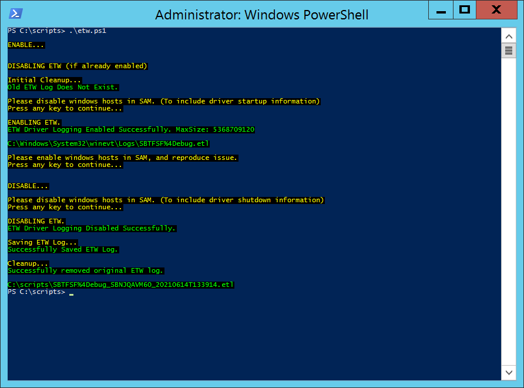

Summary: Instructions on how to enable and collect windows driver low-level logging. Event Tracing for Windows (ETW)
Issue: Sometimes the SBTService (Windows File Monitoring Service) trace logs are not enough to identify problems for certain situations. This can be useful for problems related to…
- Not getting events
- Missing event attributes
- Getting unexpected events
- High RAM/CPU caused by SBTService
- Issues caused by Antivirus or Backup software
In general for troubleshooting windows monitoring we usually start with SBTService trace logs. If we see that the root cause of the problem is going to be low-level functionality in our driver we request the ETW logs.
Instructions:
- Disable Windows Monitoring.
Make sure ETW is not enabled, and/or old ETW doesn’t exist.
- Try to Disable ETW Logging (may get warning if not enabled)
wevtutil sl SBTFSF/Debug /enabled:false /q
- Try to Unregister (may get warning if not registered)
wevtutil um %SYSTEMROOT%\System32\drivers\SBTFSFETW.man
- Remove Old ETW Log (if it exists)
del /F %SYSTEMROOT%\System32\winevt\Logs\SBTFSF%4Debug.etl
- Register ETW Logging
wevtutil im %SYSTEMROOT%\System32\drivers\SBTFSFETW.man
- Enable ETW Logging
wevtutil sl SBTFSF/Debug /enabled:true /retention:false /maxsize 5368709120 /level:0 /q
*Using 5GB as maxsize
- Enable Windows Monitoring
- Reproduce issue
- Disable Windows Monitoring
- Disable ETW Logging
wevtutil sl SBTFSF/Debug /enabled:false /q
- Unregister ETW Logging
wevtutil um %SYSTEMROOT%\System32\drivers\SBTFSFETW.man
- Please compress ETW log
%SYSTEMROOT%\System32\winevt\Logs\SBTFSF%4Debug.etl
- Collect combo of SAM Trace Logs (SBTService), and this compressed ETW Log and send to dev for review.
*Also including a powershell script to make this process a lot easier…
https://downloads.stealthbits.com/access/files/KB_Attachments/etw.ps1
etw.ps1
Requirements:
- Ran as Admin
- SBTService Installed (From SAM Agent or SI)
Usage:
etw.ps1 -Size 5368709120
*default Size is 5GB, if -Size is omitted.
*script also checks if ETW is already enabled, and if old ETW log exists. It automatically deletes old ETW log if it exists.
etw.ps1 -Path "C:\Test"
*default Path is location of script, if -Path is omitted
Optional
Script can also be used to only enable or disable etw logging. If not used it goes through whole process listed below.
etw.ps1 -Enable
etw.ps1 -Disable
What script exactly does...
- waits for user to disable windows hosts in SAM (to include startup driver info)
- tries to disable and unregister first (in case already registered)
- if old etw log exists it deletes it
- register, and enable ETW Logging (can set size with -Size, but if not, it uses 5GB by default)
- waits for user to enable and reproduce issue
- waits for user to disable windows hosts in SAM (to include shutdown driver info)
- disable and unregister ETW Logging
- copies etw log to set -Path (if not used, it uses path where script is located)
- remove etw log from original location
- Opens folder where etw was copied to

Channel: Internal
Submitted by: Kevin Duddy
Product: SAM, SI (Windows Activity Monitoring)
Affected Versions: 5.0+
Affected Module: Windows / SBTService
Dev Ticket: N/A
Resolved In Version: N/A
KB Type: How To